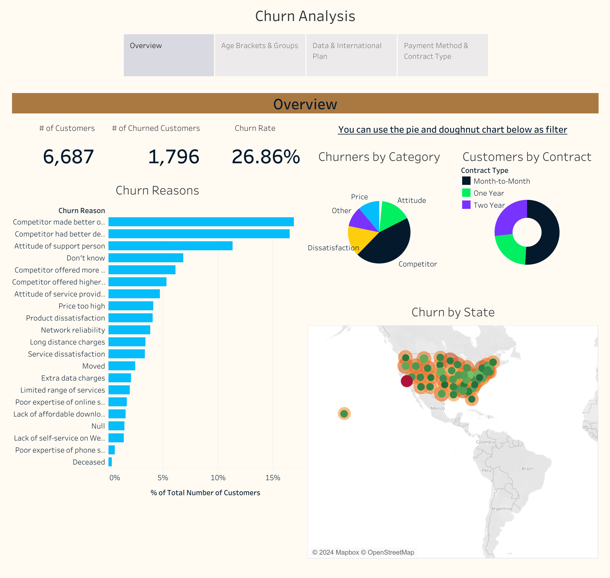
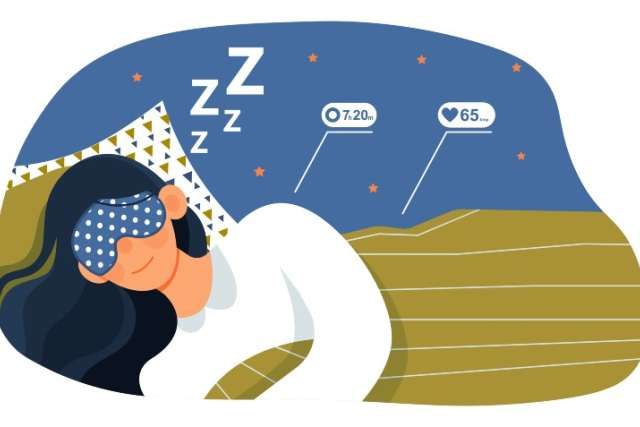
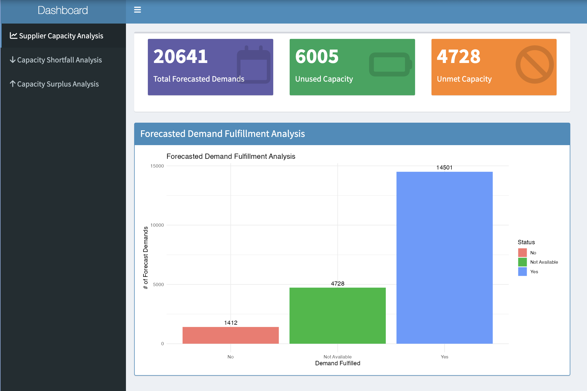

In the this project, the focus lies on understanding and quantifying customer churn for Databel, a fictional telecoms company. The primary objective is to determine the extent of churn, identifying underlying reasons for it, and offering actionable recommendations to reduce churn effectively.


This project aims to analyze the relationship between lifestyle factors and sleep health using the "Sleep Health and Lifestyle Dataset" obtained from Kaggle. It involves descriptive analytics, visualizations, and machine learning techniques to identify and understand the impact of various factors on sleep duration and disorders.

This project focuses on identifying and addressing the risks associated with supplier capacity within a supply chain. It aims to evaluate potential vulnerabilities that suppliers may have regarding their ability to meet demand, and to develop strategies to mitigate these risks.
In this project, the focus is on examining global development patterns using SAS software. The aim is to understand trends in development indicators across countries and to identify influencing factors

This comprehensive and user-friendly database system enhances the efficiency of gym operations, supports customer engagement and provides valuable insights for decision-making to improve overall business performance.